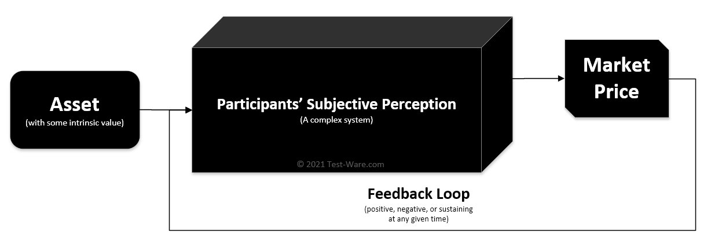

Test and sharpen your trading abilities, with real historical data.
Test-Ware is a training environment for practising and improving trading skills. Historical financial data are replayed step by step and simulated trades can be placed. Theoretical profit and loss statistics are displayed to give you instant feedback on how your strategy performed.At its core, a market is a place where many people come together and trade an asset with each other. The asset (e.g. a company's stocks, or a car) has some intrinsic value. Each market participant has a subjective perception of the value of the asset. Participants trade with each other based on their opinion of the value and the market price.
The participants' subjective perception is what gives the market its efficiency (i.e. the ability to find a fair price), but also inefficiency at times. When a large group of people interact with each other, crowd behaviour emerges and market movements can become irrational for a while. A market is just like other complex systems, such as a flock of birds swarming.
Photo by James Wainscoat on UnsplashTechnical Analysis is commonly used to measure market movements. Whilist it is not possible to predict the future, TA can tell you when a trend is weakening and the payout ratio becomes favourible. Whether the market moves in your direction after that is another story.
Well, that is the million dollar question (or billion). Like a horse betting pro, a professional trader needs to understand the strategy used like the back of the hand. What's the win rate? What's the average payout? How does the strategy fail in extreme cases? How do I feel when I'm in the red?
These questions can only be answered by you, but Test-Ware trainer aims to help you find your answers through simulated trading with real market data. This is known as backtesting and is a quick way to get better at a strategy.
The trainer includes a number of challenges. Each challenge contains the daily market price and volume data for a financial asset starting from a randomly chosen date after 2000. The name of the asset is not given to reduce bias, but a brief description of the asset is provided. Where applicable, the price is split and dividend-adjusted. And lastly, just like in real life, you may only attemp each challenge once!